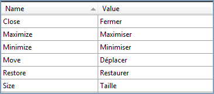

Add supported cultures for a project is the very important one to do in the sample application project before you go to run the application:
1. In the Solution Explorer, right-click your sample application project and choose Unload Project from the Context menu. Then the project will be unavailable.
2. Right-click the project again, and select the Edit SampleProjectName.csproj option.
3. In the .csproj file, find the <SupportedCultures></SupportedCultures> tags. By default, the tags will be empty. So, add the cultures that you want to be supported, separating each with a semicolon if many.
For example: <SupportedCultures>fr-FR </SupportedCultures>
4. Save the project and right-click the SampleProjectName.csproj to reload it.
5. Choose Reload SampleProjectName.csproj.
In the .resx file, change the following values:

Figure 1122: Add supported cultures